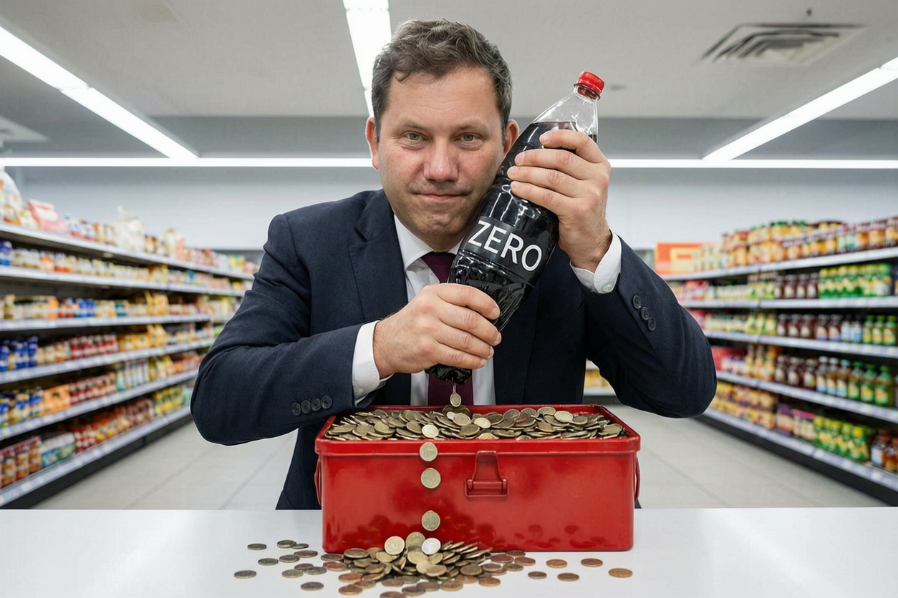

Klingbeils Zuckersteuer: Erst der Plan. Dann das Dementi.

Am Dienstag wird ein Arbeitspapier aus dem Bundesfinanzministerium bekannt. Es sieht eine Steuer selbst auf Light- und Zero-Getränke vor. Am Mittwoch erklärt Finanzminister Lars Klingbeil: „Das mache ich nicht. Das wird nicht kommen.“ Innerhalb eines Tages kassiert der Minister einen konkreten Vorschlag aus dem eigenen Ministerium.
Der Vorschlag war mehr als eine lose Bemerkung. Das Eckpunktepapier aus Klingbeils Haus erfasste Getränke „mit Zucker und/oder Süßungsmitteln“. Selbst ausschließlich mit Süßstoff gesüßte Produkte sollten mit 26 Cent je Liter belastet werden. Dazu kamen Fruchtnektare, Smoothies, Pflanzendrinks, Milchmischgetränke sowie alkoholfreie Biere, Weine und Mischgetränke. Die Hausleitung hatte sich laut dpa eine Entscheidung vorbehalten. Beschlossen war nichts. Das Papier war trotzdem real und bereits Gegenstand der Abstimmung zwischen Ministerien.
Die Finanzkommission Gesundheit hatte einen deutlich engeren Vorschlag gemacht: Unter fünf Gramm Zucker je 100 Milliliter sollte ein Getränk steuerfrei bleiben. Künstliche Süßstoffe sollten nicht besteuert werden. Die Kommission erwartete langfristig rund 450 Millionen Euro im Jahr. Die breitere Fassung aus dem Finanzministerium könnte nach einer internen Näherungsrechnung aus Wirtschafts- und Landwirtschaftsministerium rund zwei Milliarden Euro jährlich einbringen.
Dann kam der Rückzug. Klingbeil erklärte auf Instagram, eine Zuckersteuer auf zuckerfreie Getränke ergebe keinen Sinn. Seine Mitarbeiter müssten intern offen über unterschiedliche Ideen sprechen können; der bekannt gewordene Arbeitsstand sei weder politisch geeint noch in der Koalition beschlossen, berichtete das Handelsblatt. Die Verteidigung beschreibt den formalen Stand korrekt. Sie beantwortet nicht, warum eine nach Aussage des Ministers unsinnige Idee mit Steuersätzen und Produktkatalog ausgerechnet aus seinem Finanzministerium in die Ressortabstimmung gelangte.
Solche Papiere bleiben nicht folgenlos, nur weil noch kein Gesetz vorliegt. Getränkehersteller rechnen Preise und Rezepturen neu. Händler verhandeln Konditionen. Investoren bewerten Margen und regulatorische Risiken. Coca-Cola Europacific Partners, zu deren Märkten Deutschland gehört, nennt neue und höhere Steuern im eigenen Geschäftsbericht ausdrücklich als Geschäftsrisiko. Für 2025 meldete der Konzern, dass höhere Zuckersteuern in Frankreich und Großbritannien zusammen mit dem Preisdruck bei Verbrauchern zu einem Rückgang des europäischen Absatzvolumens um 0,2 Prozent beitrugen.
Ein unmittelbarer Klingbeil-Effekt an der Börse lässt sich nicht belegen. Die CCEP-Aktie schloss am Dienstag in London bei 8.060 Pence und damit auf dem Schlussstand des Vortags. An der Nasdaq verlor sie 0,25 Prozent auf 109,85 Dollar. Das liegt innerhalb normaler Tagesschwankungen und erlaubt keine politische Ursache. Zum Zeitpunkt von Klingbeils Rückzug hatte der US-Handel noch nicht begonnen.
Der fehlende Kursschock entschuldigt den Vorgang nicht. Betroffene Unternehmen, Verbände und Koalitionspartner mussten auf einen Steuerkatalog aus dem Bundesfinanzministerium reagieren. Einen Tag später verlangte der Minister, denselben Vorschlag als interne Überlegung zu behandeln. Minister führen keine Gedankenspiele. Sie führen Ministerien. Wer das eigene Haus einen solchen Steuerkatalog ausarbeiten lässt, muss ihn entweder vertreten oder erklären, wie er so weit kommen konnte. Ein Instagram-Dementi ersetzt diese Verantwortung nicht.
Mehr zur Steuerpolitik unter Gesundheitsflagge: Zwölf Euro für die Gesundheit. Zur Lage der Krankenkassen: Teurer, aber sag es keinem.